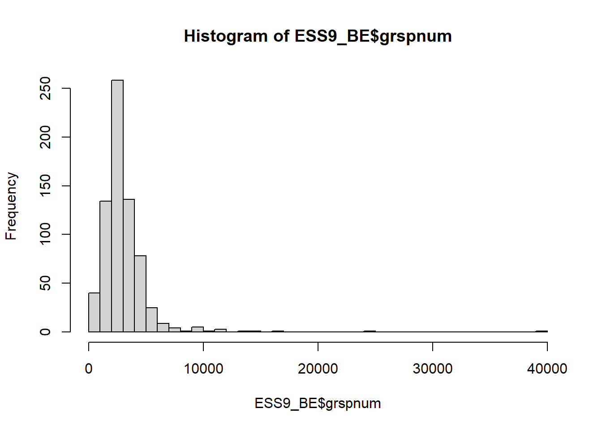

Chapitre 4 Le salaire de Belges
Si vous avez fermé R depuis le dernier chapitre, il faudra lancer les packages. Vous pouvez le faire avec le code suivant:
if (!require("pacman")) install.packages("pacman") #Cela vérifie
#si le package pacman est installé.
#S'il ne l'est pas, il est installé.
pacman::p_load(tidyverse, descr, rcompanion, codebook,
DT, sjPlot, labelled) #On lance les packages4.1 Statistiques descriptives et simples graphiques des salaires des Belges
Si l’on veut étudier les salaires des Belges il faut que nous continuions à travailler avec la base de données ESS9_BE que nous avons créée dans le chapitre précédent précédemment qui contient exclusivement les observations belges. Par ailleurs, il faut que nous identifiions la variable de la base de données contenant les salaires. Il s’agit de la variable grspnum. Nous pouvons obtenir des statistiques descriptives de cette variable avec la commande summary():
summary(ESS9_BE$grspnum)## Min. 1st Qu. Median Mean 3rd Qu. Max. NA's
## 0 2019 2800 3148 3700 40000 1068On voit que la valeur minimale est de \(0€\), la valeur maximale de \(40000€\). La moyenne s’élève à \(3148€\) tandis que la médiane est sensiblement plus basse à \(2800€\). Cela suggère qu’un nombre restreint de valeurs très élevées tirent la moyenne vers le haut. Il est à noter qu’il y a un nombre important de valeurs manquantes: \(1068\), soit \(60\%\) sur les \(1767\).
Faisons-nous une image de cette distribution. Vu qu’il s’agit d’une variable continue, nous représentons ceci sous forme d’histogramme avec la fonction de base hist() et la fonction un peu plus avancée plotNormalHistogram du package rcompanion y ajoutant une courbe de distribution normale (“cloche”)28:
hist(ESS9_BE$grspnum, breaks = 50)
plotNormalHistogram(ESS9_BE$grspnum,
breaks = 50)On peut aussi faire de graphiques plus attrayants avec les fonctions du package ggplot2 de l’ensemble tidyverse29:
ggplot(ESS9_BE, aes(x=grspnum)) +
geom_histogram(bins=50)
On voit très clairement que la plupart des valeurs sont concentrées entre \(0€\) et \(5000€\) et qu’au-delà de \(10000\) il n’y a plus que quelques observations isolées. Celles-ci tirent la moyenne vers le haut. Un autre moyen de représenter cela est de le faire à l’aide d’une “boîte à moustache” (boxplot):
boxplot(ESS9_BE$grspnum)
Vous pouvez aussi la représenter à l’aide de du package ggplot230:
ggplot(ESS9_BE, aes(x=grspnum)) +
geom_boxplot()Les boxplots indiquent aussi très clairement qu’il y a quelques valeurs “extrêmes”, très élevées, qui “tirent” la moyenne vers le haut. Par ailleurs, il y a un certain nombre d’observations avec des revenus très faibles, tels que \(0€\).
Il nous semble utile de considérer seulement les personnes travaillant à temps plein. Par ailleurs, il faut contrôler que les données soient cohérentes. La Belgique ayant un salaire minimum, il n’est pas légalement possible pour un salarié de percevoir un salaire de moins de \(1000€\) tout en travaillant à temps plein31.
Nous nous concentrons ainsi sur les Belges travaillant plus de 34 heures pas semaine (temps plein) et gagnant plus de \(1000€\) par mois, mais moins de \(15000€\) par mois. La variable “wkhtot” indique le nombre d’heures travaillées par semaine. On utilise la fonction filter() pour sélectionner les observations. On crée une nouvelle base de données nommée ESS9_BE_fulltime:
ESS9_BE_fulltime<-filter(ESS9_BE, #Base de donnés
wkhtot>34 & # Travaillant plus de 34 heures
grspnum>1000 & # Percevant plus de 1000€,
grspnum<15000) # mais moins de 15.000€.Vous pouvez vérifier cette base de données, notamment en vous assurant qu’il n’y a personne qui ravitaille moins de 35 heures et percevant moins de \(1000€\) et plus de \(15000€\). Vous pouvez utiliser la fonction summary() pour vérifier que les variables grspnum et wkhtot dans la base de données ESS9_BE_fulltime ne contiennent plus que des valeurs compatibles avec le filtre que l’on vient d’appliquer:
summary(ESS9_BE_fulltime$grspnum)## Min. 1st Qu. Median Mean 3rd Qu. Max.
## 1200 2400 2986 3365 4000 14000summary(ESS9_BE_fulltime$wkhtot)## Min. 1st Qu. Median Mean 3rd Qu. Max.
## 35.00 38.00 40.00 45.58 46.00 168.00Le filtrage a fonctionné: dans notre échantillon, personne ne travaille moins de 35 heures et personne ne perçoit moins de \(1000€\) (le minimum est de \(1200€\)) et plus de \(15000€\) (le maximum est \(14000€\)). Cependant, des anomalies apparaissent au niveau du temps de travail. L’on peut s’en rendre compte avec les fonctions table() et freq():
table(ESS9_BE_fulltime$wkhtot)##
## 35 36 37 38 39 40 41 42 43 44 45 46 47 48 49 50 52 53 55 56 60 62 65 70 72 75 80 84 100 105 147 168
## 19 12 13 110 18 103 9 23 9 8 67 4 3 7 1 48 1 1 8 1 24 1 6 13 2 4 3 1 1 1 1 4freq(ESS9_BE_fulltime$wkhtot)## Total hours normally worked per week in main job overtime included
## Frequency Percent
## 35 19 3.6122
## 36 12 2.2814
## 37 13 2.4715
## 38 110 20.9125
## 39 18 3.4221
## 40 103 19.5817
## 41 9 1.7110
## 42 23 4.3726
## 43 9 1.7110
## 44 8 1.5209
## 45 67 12.7376
## 46 4 0.7605
## 47 3 0.5703
## 48 7 1.3308
## 49 1 0.1901
## 50 48 9.1255
## 52 1 0.1901
## 53 1 0.1901
## 55 8 1.5209
## 56 1 0.1901
## 60 24 4.5627
## 62 1 0.1901
## 65 6 1.1407
## 70 13 2.4715
## 72 2 0.3802
## 75 4 0.7605
## 80 3 0.5703
## 84 1 0.1901
## 100 1 0.1901
## 105 1 0.1901
## 147 1 0.1901
## 168 4 0.7605
## Total 526 100.0000Ainsi 4 répondants affirment travailler \(168\) heures par semaine. Vu qu’une semaine compte \(168\) heures et que l’être humain a un besoin physiologique de sommeil, ces réponses semblent aberrantes32. Vue que l’analyse que nous voulons mener ne porte pas sur le temps de travail, nous n’allons ni investiguer ces cas plus en détail, ni les exclure de nos analyses.
La distribution de la variable dans la base de données que nous avons filtrée, se rapproche-t-elle d’une distribution normale? Analysons cela à nouveau avec les histogrammes et “boxplots”:
#Avec R de base:
hist(ESS9_BE_fulltime$grspnum,
breaks = 50,
main="Histogramme: Salaire des Belges en 2018",
xlab="Salaire des Belges en €")
#Avec ggplot2:
ESS9_BE_fulltime %>% ggplot(aes(x=grspnum)) +
geom_histogram(bins = 50)+
ggtitle("Histogramme: Salaire des Belges en 2018") +
xlab("Salaire des Belges en €") Avec des boxplot, la variable grspnum donne le résultat suivant:
Avec des boxplot, la variable grspnum donne le résultat suivant:
#Avec R de base:
boxplot(ESS9_BE_fulltime$grspnum,
ylab = "Salaire des Belges en €",
main = "Boîte à moustache: Salaire des Belges en 2018")
#Avec ggplot2:
ESS9_BE_fulltime %>% ggplot(aes(x=grspnum)) +
geom_boxplot() + ggtitle("Boîte à moustache: Salaire des Belges en 2018")+
xlab("Boîte à moustache: Salaire des Belges en 2018")
L’histogramme et la boîte à moustache montrent une distribution moins “écrasée”. Elle reste cependant asymétrique avec des valeurs très élevées – et une “coupure” vers le bas à \(1200€\). La distribution semble donc toujours loin d’être normale.
4.2 Comparer une distribution à une distribution normale
Visuellement, la distribution de la variable des salaires (grspnum) ne semble pas normale. Essayons d’objectiver cela. Nous rappelons quelques caractéristiques d’une distribution normale:
- la distribution est symétrique;
- moyenne \(=\) médiane \(=\) mode;
- \(\approx68\%\) des observations se trouvent dans l’intervalle entre \(-1\) écart type (\(\sigma\)) et \(+1\) écart type (\(\sigma\)) de la moyenne (\(\mu\)): \([\mu-\sigma;\mu+\sigma]\)
- \(\approx95\%\) des observations se trouvent dans l’intervalle entre \(-1,96\) écart type (\(\sigma\)) et \(+1,96\) écart type (\(\sigma\)) de la moyenne (\(\mu\)): \([\mu-1,96\sigma;\mu+1,96\sigma]\)
- \(\approx95,5\%\) des observations se trouvent dans l’intervalle entre \(-2\) écart type (\(\sigma\)) et \(+2\) écart type (\(\sigma\)) de la moyenne (\(\mu\)): \([\mu-2\sigma;\mu+2\sigma]\)
- \(\approx2,5\%\) des observation sont supérieures à \(1,96\) écart type (\(\sigma\)) de la moyenne (\(\mu\)): \([\mu+1,96\sigma;+\infty)\)
- \(\approx2,5\%\) des observation inférieurs à \(-1,96\) écart type (\(\sigma\)) de la moyenne (\(\mu\)): \([\mu-1,96\sigma;-\infty)\)
La fonction nonantecinq() que nous définissions permet de comparer la distribution d’une variable avec les caractéristiques d’une distribution normale. Pour définir une nouvelle fonction, il faut utiliser la fonction fonction()33:
nonantecinq<-function(x){
#On exclut les valeurs manquantes de la variable analysée
x1<-x[is.na(x)!=T]
#On calcule l'effectif total
x1_l1<-length(x[is.na(x)!=T])
#On calcule l'effectif se situant à -1,96 écart types de la moyenne
x1_low<-length(x1[x1 < mean(x1, na.rm=T)-1.96*sd(x1, na.rm=T)])
#On calcule l'effectif se situant à +1,96 écart types de la moyenne
x1_high<-length(x1[x1 > mean(x1, na.rm=T)+1.96*sd(x1, na.rm=T)])
#On calcule l'effectif se situant à -1 écarts types de la moyenne (point d'inflexion si normal)
x1_low_inflex<-length(x1[x1 < mean(x1, na.rm=T)-sd(x1, na.rm=T)])
#On calcule l'effectif se situant à +1 écart types de la moyenne (point d'inflexion si normal)
x1_high_inflex<-length(x1[x1 > mean(x1, na.rm=T)+sd(x1, na.rm=T)])
#Pourcentages:
pourcent_bas<-x1_low/x1_l1
pourcent_haut<-x1_high/x1_l1
pourcent_1.96<-(1-(pourcent_bas+pourcent_haut))*100
pourcent_inflex_bas<-x1_low_inflex/x1_l1
pourcent_inflex_haut<-x1_high_inflex/x1_l1
pourcent_1_inflex<-(1- (pourcent_inflex_bas + pourcent_inflex_haut))*100
#Mode(s)
mode_func <- function(x_1) {
modes_multi<-which(table(x_1)==max(table(x_1)))
mode_final<-as.numeric(names(modes_multi))
return(mode_final)
}
mode_calc<-mode_func(x)
#Affichage des résultats
message(paste(" Moyenne=",round(mean(x1, na.rm=T),2),"\n",
"Écart type=",round(sd(x1, na.rm=T),2),"\n",
"Médiane=",round(median(x1, na.rm=T),2),"\n",
"Mode (si multiples, le plus faible)=",ifelse(length(mode_calc)>1, round(mode_calc[1],2), round(mode_calc,2)),"\n",
"Le point d'inflexion (si la distribution est normale) à -1 écart type prend la valeur:", round(mean(x1, na.rm=T)-sd(x1, na.rm=T),2),"\n",
"Le point d'inflexion (si la distribution est normale) à +1 écart type prend la valeur:", round(mean(x1, na.rm=T)+sd(x1, na.rm=T),2),"\n",
round(pourcent_1_inflex,2),"%"," des valeurs se situent entre -1 et +1 écart types de la moyenne.", "\n",
round(pourcent_inflex_bas*100,2),"%"," des valeurs se situent en dessous de -1 écart types de la moyenne.","\n",
round(pourcent_inflex_haut*100,2),"%"," des valeurs se situent au-dessus de 1 écart types de la moyenne.","\n",
"-1,96 écarts types prend la valeur:", round(mean(x1, na.rm=T)-1.96*sd(x1, na.rm=T),2), "\n",
"+1,96 écarts types prend la valeur:", round(mean(x1, na.rm=T)+1.96*sd(x1, na.rm=T),2), "\n",
round(pourcent_1.96,2),"%", " des valeurs se situent entre -1,96 et +1,96 écart types de la moyenne.", "\n",
round(pourcent_bas*100,2),"%"," des valeurs se situent en dessous de -1,96 écart types de la moyenne.","\n",
round(pourcent_haut*100,2),"%", " des valeurs se situent au-dessus de 1,96 écart types de la moyenne.")
)
}Une fois que vous avez exécuté le code ci-dessus, la fonction nonantecinq() apparaîtra dans l’environnement global de R. Si vous fermer R et que vous n’enregistrez pas cet environnement global, vous devrez récréer la fonction nonantecinq() avec le code ci-dessus. Lorsque la fonction nonantecinq() est définie, vous pouvez la lancer comme toutes les fonctions de R de base ou des packages. Vous indiquez simplement le nom de la fonction avec les parenthèses dans lesquelles vous ajoutez, le cas échéant le ou les arguments. La fonction nonantecinq() ne prend qu’un seul argument qui doit être un vecteur numérique (une variable contenant des nombres). Ici, nous voulons vérifier le salaire des Belges (grspnum):
nonantecinq(ESS9_BE_fulltime$grspnum)## Moyenne= 3365.44
## Écart type= 1673.51
## Médiane= 2986
## Mode (si multiples, le plus faible)= 3000
## Le point d'inflexion (si la distribution est normale) à -1 écart type prend la valeur: 1691.93
## Le point d'inflexion (si la distribution est normale) à +1 écart type prend la valeur: 5038.96
## 85.36 % des valeurs se situent entre -1 et +1 écart types de la moyenne.
## 5.51 % des valeurs se situent en dessous de -1 écart types de la moyenne.
## 9.13 % des valeurs se situent au-dessus de 1 écart types de la moyenne.
## -1,96 écarts types prend la valeur: 85.35
## +1,96 écarts types prend la valeur: 6645.53
## 96.39 % des valeurs se situent entre -1,96 et +1,96 écart types de la moyenne.
## 0 % des valeurs se situent en dessous de -1,96 écart types de la moyenne.
## 3.61 % des valeurs se situent au-dessus de 1,96 écart types de la moyenne.On voit donc également de manière “objective” que la variable salaire (grspnum) n’est absolument pas normale:
- La distribution n’est pas symétrique: \(5,51\%\) des valeurs se situent en dessous de -1 écart types de la moyenne, tandis que \(9,13\%\) des valeurs se situent au-dessus de 1 écart types de la moyenne.
- La moyenne, la médiane et le mode sont différents. En particulier, la moyenne est plus élevée que le mode et la médiane.
- \(\approx85\%\) des observations se trouvent entre -1 et +1 écart type (contre \(68\%\) pour une distribution normale)
- \(0\%\) des observations se trouvent en dessous de \(1,96\) écart types (contre \(2,5\%\) pour une distribution normale)
- \(3,6\%\) des observations se trouvent au-dessus de \(1,96\) écart types (contre \(2,5\%\) pour une distribution normale)
4.3 Distribution normale et transformation logarithmique
La distribution de la variable des salaires (grspnum) est très éloignée d’une distribution normale. Quelques observations très élevées “tirent” la moyenne vers le haut. Cela est habituel pour les variables de type salaire ou patrimoine. Cependant, l’on peut souvent transformer ces variables de manière à les rapprocher d’une distribution normale. Une transformation très usitée pour cela est la transformation logarithmique (on prend souvent le logarithme népérien). Cela a pour effet de davantage espacer les valeurs faibles tout en réduisant les espaces entre les valeurs élevées. Nous vous illustrons cela graphiquement à l’aide une suite \(B\) allant de \(1\) à \(1000\):
suite_B<-1:1000 # Créons vecteur de 1 à 1000
log_suite_B<-log(suite_B) # Vecteur du logarithme de la suite B
suite_B_matrix<-cbind(suite_B,log_suite_B) # Nous créons une matrice avec les deux vecteurs
suite_B_df<-as.data.frame(suite_B_matrix) # Nous la transformons en base de données (dataframe)
suite_B_df %>% # nous utilisions une "pipe"
ggplot(aes(x=suite_B,y=log_suite_B)) +
geom_line() + xlab("Suite B") +
ylab("Logarithme népérien de la suite B") +
ggtitle("ggplot2: Suite B et transformation logarithmique")
plot(suite_B_df$suite_B, suite_B_df$log_suite_B, type = "l",
main="Base R: Suite B et transformation logarithmique",
xlab = "Suite B",
ylab="Logarithme népérien de la suite B")En abscisse, l’on voit la suite \(B\) (l’objet suite_B) allant de 1 à 1000. En ordonné, nous avons cette même suite \(B\) transformée de manière logarithmique. L’on voit, très clairement que la courbe augmente fortement lors de faibles valeurs puis s’aplanit. Cela correspond à l’augmentation de l’espacement des valeurs faibles et au rapprochement des grandes valeurs.
Nous allons donc appliquer cette transformation à la variable grspnum reprenant les salaires. Pour effectuer cette transformation, nous utilisons la fonction mutate() du package dplyr: celle-ci permet de créer de nouvelles variables dans une base de données. Cette fonction s’utilise de la manière suivante: vous indiquez comme premier argument, la base de donnés dans laquelle vous souhaitez ajouter une variable. Le deuxième argument correspond au nom de cette nouvelle variable suivie du signe \(=\) et de la/des valeur(s) que doit prendre cette nouvelle variable. L’on peut ainsi indiquer que cette nouvelle variable doit correspondre au logarithme népérien de la variable grspnum. Le logarithme népérien se calcule avec la fonction log():
ESS9_BE_fulltime <- mutate(ESS9_BE_fulltime,log_grspnum=log(grspnum))Regardons, dans quelle mesure la distribution a changée et si l’on s’est rapproché d’une distribution normale. Vérifions à l’aide d’un histogramme et d’un boxplot :
#Avec R de base:
hist(ESS9_BE_fulltime$log_grspnum,
breaks = 30,
xlab = "Logarithme du salaire des Belges", # Libellé de l'abscisse.
main = "Histogramme: Logarithme du salaire des Belges en 2018") # Titre du graphique
#Avec ggplot2:
ESS9_BE_fulltime %>% ggplot(aes(x=log_grspnum)) +
geom_histogram(bins = 30) +
ggtitle("Histogramme: Logarithme du salaire des Belges en 2018") +
xlab("Logarithme du salaire des Belges")
#Avec R de base:
boxplot(ESS9_BE_fulltime$log_grspnum,
xlab = "Logarithme du salaire des Belges", # Libellé de l'abscisse.
main = "Histogramme: Logarithme du salaire des Belges en 2018") # Titre du graphique
#Avec ggplot2:
ESS9_BE_fulltime %>% ggplot(aes(x=log_grspnum)) +
geom_boxplot() +
ggtitle("Boxplot: Logarithme du salaire des Belges en 2018") +
xlab("Logarithme du salaire des Belges")
La distribution est sensiblement moins étirée. Cela ressemble plus à une distribution normale. Comparons l’histogramme avec une courbe de densité d’une distribution normale:
#Avec R de base:
plotNormalHistogram(ESS9_BE_fulltime$log_grspnum,
breaks = 30,
xlab = "Logarithme du salaire des Belges", # Libellé de l'abscisse.
main = "Histogramme: Logarithme du salaire des Belges en 2018") # Titre du graphique
#Avec ggplot2:
ESS9_BE_fulltime %>% ggplot(aes(x=log_grspnum)) +
geom_histogram(aes(y =..density..), bins = 30) +
stat_function(fun = dnorm,
args = list(mean = mean(ESS9_BE_fulltime$log_grspnum),
sd = sd(ESS9_BE_fulltime$log_grspnum)),
col="blue", size=1.25) +
ggtitle("Histogramme: Logarithme du salaire des Belges en 2018") +
xlab("Logarithme du salaire des Belges")
Vérifions cela à l’aide de la fonction nonantecinq:
nonantecinq(ESS9_BE_fulltime$log_grspnum)## Moyenne= 8.03
## Écart type= 0.42
## Médiane= 8
## Mode (si multiples, le plus faible)= 8.01
## Le point d'inflexion (si la distribution est normale) à -1 écart type prend la valeur: 7.61
## Le point d'inflexion (si la distribution est normale) à +1 écart type prend la valeur: 8.44
## 67.3 % des valeurs se situent entre -1 et +1 écart types de la moyenne.
## 15.78 % des valeurs se situent en dessous de -1 écart types de la moyenne.
## 16.92 % des valeurs se situent au-dessus de 1 écart types de la moyenne.
## -1,96 écarts types prend la valeur: 7.21
## +1,96 écarts types prend la valeur: 8.84
## 94.68 % des valeurs se situent entre -1,96 et +1,96 écart types de la moyenne.
## 1.71 % des valeurs se situent en dessous de -1,96 écart types de la moyenne.
## 3.61 % des valeurs se situent au-dessus de 1,96 écart types de la moyenne.Les données numériques sont tout autant instructives que le diagnostic visuel:
- Le mode, la médiane et la moyenne sont tous très proches de \(8\) (et donc presque identiques).
- \(67\%\) des observations se trouvent entre \(-1\) et \(+1\) écart type (contre \(\approx68\%\) d’une distribution normale).
- \(\approx95\%\) des observations se trouvent entre \(-1,96\) et \(+1,96\) écart types (comme pour une distribution normale).
- \(2\%\) des observations se trouvent en dessous de \(-1,96\) écart types et \(4%\) se trouvent au-dessus de \(+1,96\) écart types (contre \(2,5\%\) en dessous et au-dessus dans une distribution normale).
Empiriquement, nous ne sommes pas face à une distribution tout à fait normale, mais nous en sommes très proches. Cela d’autant plus que le salaire (grspnum, d’où log_grspnum) est une variable continue, que la réponse est une déclaration spontanée (les sondés auront tendance à donner des chiffres “ronds”)34 et que l’échantillon est assez grand (\(n=526\)). Il y a donc une très forte probabilité que la variable sous-jacente dans la population suive une distribution normale. L’on peut donc traiter la variable salaire transformée (log_grspnum) comme une distribution normale. Cela nous permet à calculer des probabilités comme nous allons le voir dans le prochain chapitre.
4.4 Distribution normale et probabilités
La distribution normale a un certain nombre de propriétés très intéressantes. L’une d’entre elles et que lorsqu’on connait la moyenne et la variance/l’écart type (ou qu’on l’estime) d’une distribution normale, l’on peut facilement connaître la probabilité d’obtenir une valeur dans un certain intervalle. On se sert de cette propriété dans la statistique inférentielle (qui vise à apporter des connaissances sur la population et pas seulement sur l’échantillon), car les moyennes d’échantillons d’assez grande taille (\(n>30\)) tirés d’une même population suivent une loi normale (même si la variable étudiée ne suit pas une distribution normale). Cela permet de calculer des intervalles de confiance et le risque de faux positifs (p-valeur) et de tirer des conclusions sur la population dont est issu l’échantillon35.
4.5 Connaître la probabilité des salaires
La variable log_grspnum que l’on a créée dans le chapitre précédent reprend la transformation logarithmique du revenu mensuel des Belges travaillant à temps plein (\(>34\) heures de travail), sans des valeurs aberrantes (trop faibles pour un travail à temps plein) et des revenus dépassant les \(15.000€\). Cette variable log_grspnum peut être considérée comme suivant une distribution normale. Par conséquent, l’on peut facilement déterminer la probabilité qu’un Belge travaillant à temps plein touche un salaire dans un certain intervalle. On peut, par exemple, déterminer quelle est la probabilité de bénéficier d’un revenu supérieur à \(3000€\), inférieur à \(1000€\) ou située entre \(1350€\) et \(1400€\).
R permet de calculer cette probabilité de manière très simple à l’aide de la fonction pnorm(). Celle-ci permet de calculer la probabilité qu’une valeur se trouve dans un certain intervalle, en indiquant la valeur dont on veut connaitre la probabilité, la moyenne, l’écart type et si l’on cherche l’intervalle supérieur ou inférieur à la valeur recherchée. R permet, par ailleurs, de représenter graphiquement assez simples ces intervalles.
Notre exemple comporte une difficulté supplémentaire, car nous avons transformé le salaire avec le logarithme népérien. En effet, nous ne pouvons pas directement indiquer l’intervalle de revenu dont nous souhaitons connaître la probabilité. Il faut que nous transformions le salaire que nous voulons tester à l’aide du logarithme népérien36. Vu que R permet d’imbriquer des fonctions, l’on peut assez facilement surmonter cette difficulté.
Si vous nous voulons connaitre la probabilité de bénéficier d’un revenu supérieur à \(2500€\), nous pouvons le faire ainsi:
pnorm(log(2500), # Le logarithme népérien de 2500
mean = mean(ESS9_BE_fulltime$log_grspnum), #la moyenne de la variable log_grspnum
sd=sd(ESS9_BE_fulltime$log_grspnum),#l'écart type de la variable log_grspnum
lower.tail = F #Nous voulons connaitre la probabilité que la valeur soit au-dessus de 2500
)## [1] 0.6882183La probabilité de percevoir un salaire supérieur à \(2500€\) est exprimé en probabilité: \(0,69\), ce qui correspond à \(69\%\).
Si l’on voulons calculer la probabilité de percevoir un salaire inférieur à \(2500€\), l’on indique le code suivant:
pnorm(log(2500), # Le logarithme népérien de 2500
mean = mean(ESS9_BE_fulltime$log_grspnum), #la moyenne de la variable log_grspnum
sd=sd(ESS9_BE_fulltime$log_grspnum),#l'écart type de la variable log_grspnum
lower.tail = T #Nous voulons connaitre la probabilité que la valeur soit en dessous de 2500
)## [1] 0.3117817La probabilité de percevoir un salaire inférieur à \(2500€\) est donc de \(0,31\) soit \(31\%\). Vous aurez noté que la probabilité cumulé de percevoir un salaire inférieur à \(2500€\) et supérieur à \(2500€\) est de \(1\) (\(0,69+0,31=1\)). L’on peut utiliser cela pour calculer la probabilité e percevoir un salaire dans un certain intervalle. Si l’on voulait connaître la probabilité de percevoir un salaire supérieur à \(2500€\),mais inférieur à \(2800€\), l’on calcule simplement:
#La probabilité de bénéficier d'un salaire inférieur à 2800 €
#On l'appelle proba_inf_2800
proba_inf_2800<-pnorm(log(2800), # Le logarithme népérien de 2800
mean = mean(ESS9_BE_fulltime$log_grspnum), #la moyenne de la variable log_grspnum
sd=sd(ESS9_BE_fulltime$log_grspnum),#l'écart type de la variable log_grspnum
lower.tail = T #Nous voulons connaitre la probabilité que la valeur soit en dessous de 2800
)
proba_inf_2800## [1] 0.413685#La probabilité de bénéficier d'un salaire inférieur à 2500 €
#On l'appelle proba_inf_2500
proba_inf_2500<-pnorm(log(2500), # Le logarithme népérien de 2500
mean = mean(ESS9_BE_fulltime$log_grspnum), #la moyenne de la variable log_grspnum
sd=sd(ESS9_BE_fulltime$log_grspnum),#l'écart type de la variable log_grspnum
lower.tail = T #Nous voulons connaitre la probabilité que la valeur soit en dessous de 2500
)
proba_inf_2500## [1] 0.3117817#La différence entre la probabilité
#de bénéficier d'un salaire supérieur à 2500€ (proba_inf_2500) et
#la probabilité de bénéficier d'un salaire inférieur à 2800 € (proba_inf_2800):
proba_combi_2500_2800<-proba_inf_2800-proba_inf_2500
#Cette différence donne:
proba_combi_2500_2800## [1] 0.1019033La probabilité de bénéficier d’un salaire entre \(2500€\) et \(2800€\) est donc de \(0,1\), soit \(10\%\). En effet, la probabilité de bénéficier d’un salaire de moins de \(2800€\) est de \(0,41\) (\(41\%\)). La probabilité de bénéficier d’un salaire de moins de \(2500€\) est de \(0,31\) (\(31\%\)). D’où, si l’on prend la différence entre les deux l’on trouve la probabilité de bénéficier d’un salaire entre \(2500€\) et \(2800€\) (\(0,41-0,31=0,1\)).
L’on peut représenter cela de manière visuelle. Par simplicité, nous utilisions le code généré par l’interface graphique “R Commander” (Rcmdr)37. D’autres manière de représenter cela impliquent de combiner, voir d’imbriquer, des fonctions telles que polygon()/geom_polygon(), dnorm() et éventuellement rev() et rep() qui nous semble trop complliqués à expliquer dans ce syllabus. pour utiliser les fonctions issues du package Rcmdr, lancez le ainsi:
p_load(Rcmdr)Ensuite, vous pouvez soit faire les manipulations dans “R Commander” ou utiliser le code dans le R Script . Si vous souhaiter utiliser le code dans le R Script, je vous conseille de fermer la fenêtre du “R Commander” pour que les graphiques générés n’apparaissent pas dans la fenêtre du “R Commander” pas à leur emplacment habituel:
.x <- seq(6.661, 9.395, length.out=1000)
plotDistr(.x,
dnorm(.x,
mean=mean(ESS9_BE_fulltime$log_grspnum),
sd=sd(ESS9_BE_fulltime$log_grspnum)),
cdf=FALSE,
xlab="Revenu en log(€)",
ylab="Densité",
main=paste("Normal Distribution: Mean=8.027993, Standard deviation=0.4155336"),
regions=list(c(log(2500), log(2800))),
col=c('#BEBEBE', '#BEBEBE'),
legend.pos='topright')Grâce à ce graphique l’on voit visuellement où se situent les \(10\%\) de probabilité de percevoir entre \(2500€\) et \(2800€\).
L’on peut aussi calculer le montant à partir duquel l’on perçoit un revenu supérieur à 80% de la population et à partir duquel on appartient aux Belges percevant les 10% de revenus les plus faibles. Cela se calcule aisément avec la fonction qnorm(). L’on indique en tant que premier argument le pourcentage (de 0 à 1) qu’on souhaiterait connaitre, puis comme deuxième et troisième argument la moyenne et l’écart type. Par défaut, R vous retourne la probabilité de percevoir moins. Si vous voulez connaître la probabilité de percevoir plus, il faut spécifier un quatrième argument: “lower.tail=F”.
Calculons donc la probabilité de percevoir un revenu supérieur à 80% de la population:
qnorm(0.8, # 80%
mean = mean(ESS9_BE_fulltime$log_grspnum), #la moyenne de la variable log_grspnum
sd=sd(ESS9_BE_fulltime$log_grspnum),#l'écart type de la variable log_grspnum
lower.tail = F #Nous voulons connaitre la probabilité que la valeur soit au-dessus de 0.8 (80%)
)## [1] 7.678271Le montant à partir duquel l’on perçoit plus que 80% de la population est de \(7.68\). Ce montant est difficilement interprétable. En effet, il s’agit du logarithme népérien du revenu. Il faut donc transformer cette valeur. On passe du logarithme népérien à la valeur d’origine en appliquant une transformation exponentielle à la valeur. Pour cela, l’on peut utiliser la fonction exp():
#On calcule la valeur exacte et l'appelle plus_80_pc
plus_80_pc<-qnorm(0.8, # 80%
mean = mean(ESS9_BE_fulltime$log_grspnum), #la moyenne de la variable log_grspnum
sd=sd(ESS9_BE_fulltime$log_grspnum),#l'écart type de la variable log_grspnum
lower.tail = T #Nous voulons connaitre la probabilité que la valeur soit en dessous de 0.8 (80%)
)
#On transforme cette valeur en euro:
exp(plus_80_pc)## [1] 4349.057Il en découle que l’on doit percevoir plus de \(4349,06€\) par mois pour gagner plus de 80% des personnes travaillant à temps plein en Belgique. L’on peut représenter cela graphiquement:
.x <- seq(6.661, 9.395, length.out=1000)
plotDistr(.x,
dnorm(.x,
mean=mean(ESS9_BE_fulltime$log_grspnum),
sd=sd(ESS9_BE_fulltime$log_grspnum)),
cdf=FALSE,
xlab="Revenu en log(€)",
ylab="Densité",
main=paste("Normal Distribution: Mean=8.027993, Standard deviation=0.4155336"),
regions=list(c(plus_80_pc, 15)),
col=c('#BEBEBE', '#BEBEBE'),
legend.pos='topright')Si l’on veut déterminer à partir de quelle somme l’on appartient aux 10% des Belges travaillant à temps plein percevant le moins de revenu, il faut calculer ainsi:
#On calcule la valeur exacte et l'appelle moins_10_pc
moins_10_pc<-qnorm(0.1, # 80%
mean = mean(ESS9_BE_fulltime$log_grspnum), #la moyenne de la variable log_grspnum
sd=sd(ESS9_BE_fulltime$log_grspnum),#l'écart type de la variable log_grspnum
lower.tail = T #Nous voulons connaitre la probabilité que la valeur soit en dessous de 0.1 (10%)
)
moins_10_pc## [1] 7.495465#On transforme cette valeur en euro:
exp(moins_10_pc)## [1] 1799.861Il faut donc percevoir moins de \(1799,86€\) pour appartenir au 10% des Belges travaillant à temps plein percevant les revenus les plus faibles. L’on peut également représenter cela graphiquement:
.x <- seq(6.661, 9.395, length.out=1000)
plotDistr(.x,
dnorm(.x,
mean=mean(ESS9_BE_fulltime$log_grspnum),
sd=sd(ESS9_BE_fulltime$log_grspnum)),
cdf=FALSE,
xlab="Revenu en log(€)",
ylab="Densité",
main=paste("Normal Distribution: Mean=8.027993, Standard deviation=0.4155336"),
regions=list(c(-1, moins_10_pc)),
col=c('#BEBEBE', '#BEBEBE'),
legend.pos='topright')On peut également faire des calculs similaires pour d’autres types de distributions que la distribution normale. Vous trouverez ici une liste non exhaustive des distributions pour lesquelles R propose des fonctions:
- la distribution binomiale
- la distribution du khi-deux
- la distribution exponentielle
- la distribution F (loi de Fisher-Snedecor)
- la distribution logistique
- la distribution log-normale
- La distribution poisson
- La distribution t de Student
- La distribution uniforme
Nous définissions qu’il y a 50 barres dans l’histogramme: “breaks = 50” comme second argument de la fonction hist() et plotNormalHistogram.↩︎
Nous définissons qu’il y a 50 barres dans l’histogramme: “bins=50” comme second argument de la fonction geom_histogram.↩︎
Si vous comparer le code du boxplot à l’histogramme avec ggplot2, vous remarquerez, que seule la deuxième partie de la commande a changée. Cette similarité du code est un grand avantage du package ggplot2. Nous reviendrons plus tard sur la syntaxe et l’utilisation de ggplot2.↩︎
Il est certainement possible qu’il y ait des cas très spécifiques où cela puisse se produire. Mais nous excluons ces cas de nos analyses.↩︎
Il faudrait analyser plus en détail ces cas anormaux: peut-être que les personnes concernées exercent des professions en tant qu’indépendants et s’estiment “de garde” en permanence.↩︎
Vu qu’il ne s’agit pas d’une introduction à la programmation avec R, nous ne nous attardons pas sur l’écriture de fonctions dans R. Nous renvoyons à l’ouvrage “Introduction à la programmation en R” de Vincent Goulet et plus particulièrement au chapitre 5: “Fonctions définies par l’usager”.↩︎
Si l’on avait accès aux données de revenus comme l’a l’administration fiscale (en Belgique: SPF Finances) et les organismes de la sécurité sociale (en Belgique notamment par le biais de la BCSS), la distribution serait vraisemblablement encore plus proche de la distribution normale.↩︎
Pour les concepts d’échantillon et de population, d’intervalles de confiance, de p-valeur nous renvoyons aux ouvrages d’introduction aux statistiques. Notons que contrairement à des formulations que l’on peut trouver ça et là, les “vraies” valeurs dans la population sont et restent toujours inconnues. Les estimations que l’on peut obtenir par des procédés mathématiques ne permettent pas de connaître cette “vraie” valeur. L’on peut simplement connaître la probabilité d’obtenir une valeur dans l’intervalle calculée si l’on prend un nouvel échantillon dans la population.↩︎
Attention: Si nous travaillons avec des données qui ne sont pas transformées, il n’y pas besoin de faire une telle transformation!↩︎
Ce syllabus ne s’attarde pas sur le fonctionnement de cet interface graphique. Vous trouverez des explications en ligne, notamment: https://lms.fun-mooc.fr/c4x/UPSUD/42001S02/asset/introRcmdr.html↩︎